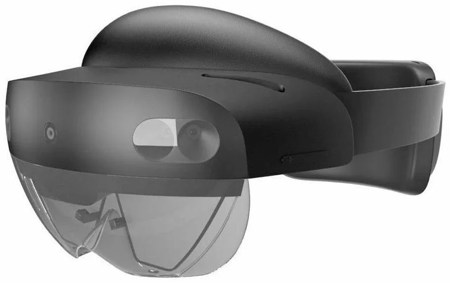
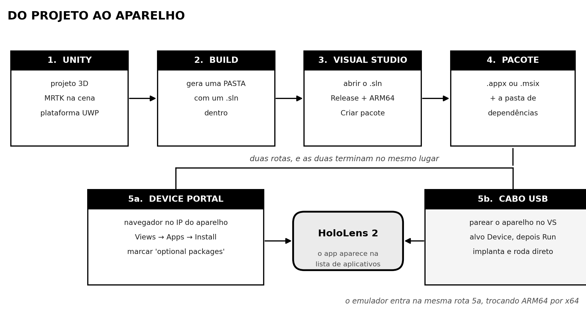
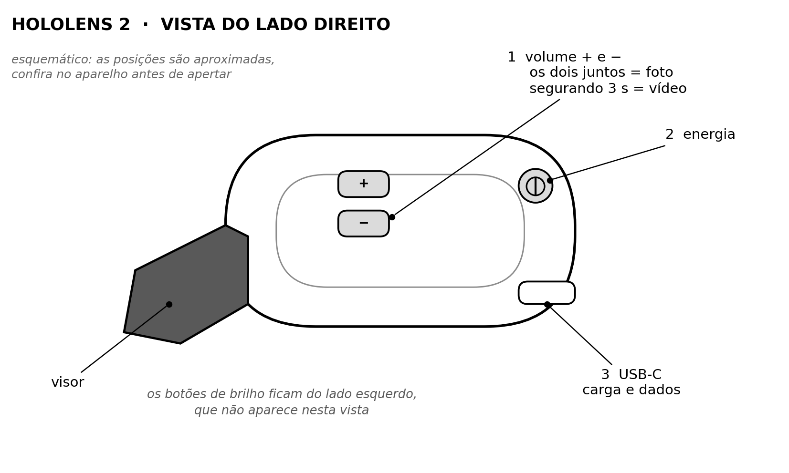
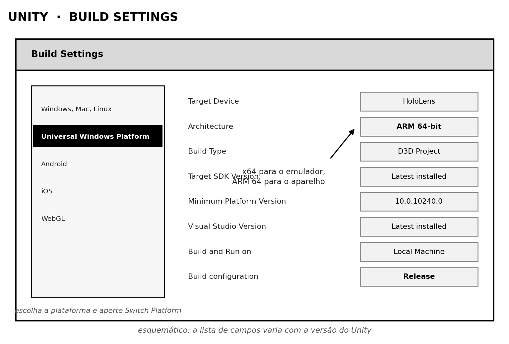
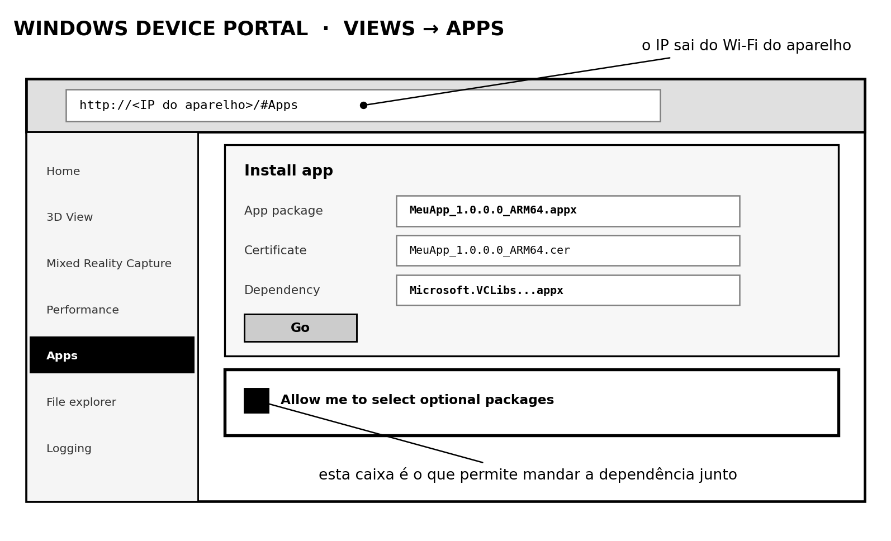
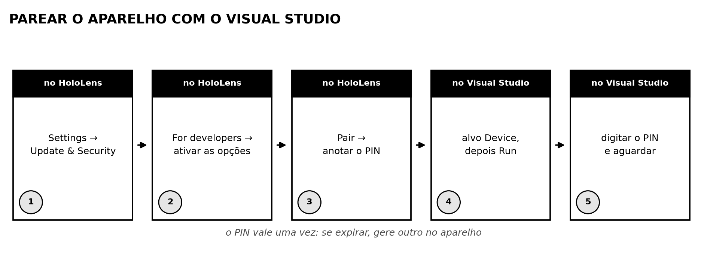

HoloLens 2: conectar e instalar, do zero
Do projeto aberto no Unity até o aplicativo rodando no
aparelho. Baseado no hololens tutorial.txt deste repositório,
reorganizado em ordem de execução.

Versão para imprimir (PDF, 13 páginas)
1.O caminho inteiro, antes de começar
São quatro etapas até ter um pacote na mão, e duas rotas alternativas para pôr esse pacote dentro do aparelho. Vale olhar o desenho antes de executar: quem está no meio do processo perde a noção de quanto falta e de onde a coisa pode ter dado errado.

| Etapa | Produz | Onde costuma falhar |
|---|---|---|
| 1. Unity | a cena com o MRTK configurado | plataforma ainda em Windows, e não em UWP |
| 2. Build | uma pasta com um .sln
dentro | abrir o .sln errado, fora da pasta gerada |
| 3. Visual Studio | o projeto compilado | ficar em Debug em vez de Release |
| 4. Pacote | o .appx e a pasta de
dependências | escolher arquitetura diferente da do build |
| 5a. Portal | o app instalado | não marcar a caixa das dependências |
| 5b. USB | o app instalado e rodando | PIN de pareamento expirado |
ARM64 para o aparelho de verdade, x64 para o emulador, e a mesma escolha em todas as etapas. Compilar em ARM64 e tentar instalar no emulador, ou o contrário, produz uma falha genérica de instalação que não diz qual é o problema.
Testar no emulador antes
O emulador roda no PC e aceita o mesmo pacote, compilado em x64. Vale usar enquanto o projeto ainda muda muito: o ciclo é mais rápido e não ocupa o aparelho, que costuma ser um só no laboratório.
O que o emulador não reproduz é o que mais importa no fim: o posicionamento espacial real. Espere que o modelo apareça em outro lugar no aparelho. Não é defeito do projeto, é o mapeamento da sala.
O caminho descrito aqui é o do MRTK 2 com build UWP, que foi o usado no projeto e continua funcionando. Existe um MRTK 3, com outra estrutura de pacotes, que não é o descrito aqui. As etapas de empacotar e instalar valem para os dois, porque não dependem do toolkit.
Sobre o equipamento: a produção do HoloLens 2 foi encerrada, com atualizações de segurança anunciadas até o fim de 2027 [5]. Isso não muda nenhum passo daqui, mas muda a decisão de apostar nesta plataforma para um trabalho novo e longo.
2.O aparelho e os botões

| Controle | Função | |
|---|---|---|
| 1 | Volume + e − | volume no uso normal [4]. Os dois juntos tiram uma foto; segurando os dois por três segundos começa um vídeo, e um toque nos dois para a gravação. |
| 2 | Energia | liga e desliga. Os LEDs ao lado mostram carga e estado. |
| 3 | USB-C | carga e cabo de dados. É por aqui que passa o pareamento com o Visual Studio e a cópia de arquivos. |
O que ter em mãos antes de começar
| Item | Por quê |
|---|---|
| Aparelho carregado | um aparelho desligando no meio da implantação deixa o pacote pela metade |
| Usuário e senha do Device Portal | criados na primeira vez que ele é habilitado, e não recuperáveis depois |
| Mesma rede que o PC | a rota do portal é pela rede. Sem ela, sobra o cabo. |
| Cabo USB-C de dados | cabo só de carga não serve, e é a causa silenciosa mais comum de "o PC não vê o aparelho" |
| Espaço físico livre | o aparelho mapeia a sala. Testar encostado numa parede branca e vazia dá um mapeamento ruim. |
3.Instalar as ferramentas
A ordem importa: o Unity precisa encontrar o Visual Studio já instalado para oferecer o suporte a UWP. Instale o Visual Studio primeiro.
- Visual Studio, com as cargas de trabalho
Desktop development with C++,Universal Windows Platform developmenteGame development with Unity. Nos componentes individuais, confirme o Windows 10/11 SDK e o suporte aUSB Device Connectivity. - Unity Hub e o editor, marcando o módulo
Universal Windows Platform Build Support. Sem esse módulo a plataforma UWP aparece na lista mas não pode ser selecionada, e a mensagem não explica por quê. - Emulador do HoloLens 2, se você vai testar sem o aparelho. Ele exige virtualização habilitada na BIOS e o Hyper-V ligado.
- Modo de desenvolvedor no Windows do PC:
Configurações → Privacidade e segurança → Para desenvolvedores. Sem isso não dá para instalar um pacote assinado por certificado próprio. - Modo de desenvolvedor no HoloLens:
Settings → Update & Security → For developers. Ative as opções de desenvolvedor e, na mesma tela, o Device Portal.
Ao habilitar o portal pela primeira vez, o aparelho pede para criar um usuário e uma senha. Eles não são a conta da Microsoft e não são recuperáveis depois. Sem eles o navegador não passa da tela de login, e o único caminho é redefinir o portal no próprio aparelho.
A lista de versões compatíveis muda com o tempo, e a página que a mantém atualizada é a da Microsoft:
learn.microsoft.com/windows/mixed-reality/develop/install-the-toolsReferência [1].
Consulte essa página antes de instalar. Ela é a única fonte que diz qual versão do Unity casa com qual versão do toolkit no momento em que você estiver lendo. Este guia descreve o procedimento, não a tabela de versões. E reserve uma tarde: instalar tudo leva bem mais tempo e espaço em disco do que parece.
4.Unity e MRTK
O MRTK é o que transforma um projeto 3D comum em um projeto de realidade mista: ele traz as mãos, o olhar, os menus flutuantes e o perfil de configuração do aparelho. Sem ele, a cena compila e roda, mas não responde a gesto nenhum.
- Crie um projeto 3D no Unity Hub, com o editor que tem o módulo UWP instalado.
- Troque a plataforma para UWP.
File → Build Settings, selecioneUniversal Windows Platforme clique emSwitch Platform. Isso reimporta os assets e demora. - Baixe os pacotes do MRTK, o Foundation e o Tools.
São arquivos
.unitypackage. - Importe o Foundation arrastando para o projeto aberto. Ao terminar, aparece a janela de configuração do MRTK. Ela nasce pequena: estique a janela antes de decidir qualquer coisa, ou os botões ficam fora da área visível.
- Aceite a primeira opção na janela de configuração, que aplica as definições recomendadas ao projeto.
- Habilite o OpenXR em
Edit → Project Settings → XR Plug-in Management, na aba da plataforma UWP. - Importe o Tools, do mesmo jeito.
- Ponha o MRTK na cena:
Mixed Reality → Toolkit → Add to Scene and Configure. - Troque o perfil no
Inspector, à direita, paraDefaultHoloLens2ConfigurationProfile. Sem isso a cena fica com o perfil genérico, que não assume mãos nem o formato do visor. - Aperte Play e confirme que a cena roda no editor.
Um projeto que não roda no editor não vai rodar no aparelho. Cada volta do ciclo build, empacotar e instalar custa dezenas de minutos, e depurar no aparelho é muito mais difícil do que depurar no editor.
5.Build Settings e a solution

File → Build Settings.
Esquemático: a lista varia com a versão do Unity.| Campo | Valor | Por quê |
|---|---|---|
Target Device | HoloLens |
define o perfil de dispositivo do pacote |
Architecture | ARM 64-bit |
x64 se o alvo for o emulador. É o campo que mais causa erro. |
Build Type | D3D Project |
gera um projeto de aplicativo, e não uma biblioteca |
Target SDK Version | Latest installed |
usa o SDK que você realmente instalou |
Build configuration | Release |
em Debug o app roda devagar no aparelho e às vezes nem
empacota |
- Clique em
Builde escolha uma pasta vazia, por exemploBuild/dentro do projeto. - Espere. A primeira compilação é longa.
- Abra a pasta gerada e localize o
.slndentro dela.
É o que está dentro da pasta que o build acabou de criar, e não o
.sln que o Unity possa ter deixado na raiz do projeto para
editar scripts. São arquivos diferentes: o da raiz não empacota nada, e quem
abre o errado fica procurando a opção de publicar num menu onde ela não
existe.
O Unity oferece Build And Run, que compila e já
tenta implantar. Enquanto você está aprendendo o fluxo, prefira só
Build: com as etapas separadas dá para ver em qual delas a
coisa parou.
6.Visual Studio: gerar o pacote
- Abra o
.slnque está dentro da pasta do build. - Confirme a configuração na barra de cima:
Release, e a plataforma igual à do build (ARM64para o aparelho,x64para o emulador). - No Gerenciador de Soluções, à direita, clique com o botão direito
no projeto e escolha
Publicar → Criar Pacotes de Aplicativo. - Escolha
Sideloading, que é distribuição fora da loja. - Selecione ou crie o certificado. Um certificado de teste gerado na hora serve.
- Marque a arquitetura correspondente, a mesma de novo.
- Aguarde o aviso de que o pacote foi gerado. Ele diz onde os arquivos ficaram.
| Arquivo ou pasta | Para que serve |
|---|---|
NomeDoApp_versão_ARM64.appx(ou .msix) |
o aplicativo. É o arquivo principal. |
Dependencies/ | as bibliotecas de runtime, numa subpasta por arquitetura. É o que quase todo mundo esquece. |
.cer | o certificado que assinou o pacote. |
Pegue a que corresponde ao alvo: ARM64 para o
aparelho, x64 para o emulador. Mandar a dependência da
arquitetura errada falha na instalação com uma mensagem que fala de pacote
inválido, sem dizer que o problema é a arquitetura.
Com o pacote e as dependências em mãos, o resto pode ser feito de qualquer PC na mesma rede do aparelho. Guarde a pasta inteira: para reinstalar depois, não é preciso recompilar nada.
7.Instalar pelo Device Portal
O Device Portal é um site que o próprio aparelho serve. Do navegador do PC dá para instalar aplicativos, ver o que está rodando, gravar a tela e navegar nos arquivos. É a rota mais simples, e é a que não precisa de cabo.
| Ligação | Endereço |
|---|---|
| Wi-Fi | http://<IP do aparelho>. O IP
está em Settings → Network & Internet → Wi-Fi, nas
propriedades da rede conectada. |
| USB | http://127.0.0.1:10080, com o
aparelho ligado no cabo. [2] |

Views → Apps. Esquemático: o arranjo varia
com a versão do sistema.- Abra o endereço no navegador e faça login. O aviso de certificado não confiável é esperado: o certificado é do próprio aparelho.
- Vá em
Views → Apps. - Marque
Allow me to select optional packagesantes de escolher o arquivo. É essa caixa que habilita o campo de dependência. - Em
App package, escolha o.appxda pasta principal. - No campo de dependência, escolha o arquivo dentro da subpasta
Dependenciescorrespondente à arquitetura do alvo. - Clique em
Goe acompanhe a barra de progresso. - Ponha o aparelho e procure o app na lista de aplicativos.
Pular o passo 3. Sem a caixa marcada, o portal aceita o
.appx, instala, e o app falha ao abrir ou nem aparece. A
mensagem de erro não menciona dependências.
8.Parear e implantar por USB
A segunda rota dispensa gerar pacote: o Visual Studio compila, instala e já abre o app no aparelho. É o caminho de quem está iterando.

- No HoloLens, vá em
Settings → Update & Security → For developerse confirme que as opções de desenvolvedor estão ativas. - Toque em
Pair. O aparelho mostra um PIN. - No Visual Studio, com o projeto aberto, escolha
Devicecomo alvo de implantação. - Execute. O Visual Studio pede o PIN na primeira vez.
- Digite o PIN e aguarde. Ele compila, transfere, instala e abre o app no aparelho.
Se a caixa do Visual Studio recusar o código, volte ao aparelho, toque em
Pair de novo e use o PIN novo. Não é erro de digitação na maior
parte das vezes.
O aparelho pode identificar a plataforma como ARM mesmo tendo sido compilado como ARM64. Isso é nomenclatura da ferramenta e não indica problema, desde que o build e o alvo estejam coerentes.
9.Gravar vídeo e extrair arquivos
A gravação sai com os hologramas compostos sobre a imagem da câmera, que é exatamente o que se quer para demonstrar o trabalho.
| Para | Faça |
|---|---|
| Tirar uma foto | aperte volume + e
volume − ao mesmo tempo |
| Começar um vídeo | segure os dois por cerca de três segundos |
| Parar o vídeo | toque nos dois de novo, ao mesmo tempo |
Com o HoloLens ligado no PC pelo cabo USB-C, ele aparece no Explorador de Arquivos como um dispositivo portátil. Vídeos e fotos ficam em:
Este Computador\<nome do aparelho>\Internal Storage\Pictures\Camera RollO nome do aparelho é o que está em
Settings → System → About, algo como
HOLOLENS-XXXXXX. Pelo Device Portal, o mesmo conteúdo está em
File explorer e em Mixed Reality Capture.
Notas do emulador
- Para selecionar no emulador, a tecla de espaço.
F2abre o painel de controle da simulação.
Estas duas são anotações do próprio projeto, e não a lista oficial. Se o comportamento do seu emulador for outro, a ajuda dele é a referência.
Espere que o modelo apareça em posição diferente no aparelho em relação ao emulador. O posicionamento depende do mapeamento da sala. Faça o teste final no espaço onde a demonstração vai acontecer, e com tempo para ajustar.
10.Quando dá errado
| Sintoma | Causa provável | O que fazer |
|---|---|---|
| UWP não pode ser selecionada no Unity | falta o módulo de build UWP no editor | instalar pelo Unity Hub, em
Add modules |
| A janela do MRTK aparece cortada | ela nasce pequena | esticar a janela antes de decidir |
| Não acho a opção de publicar no Visual Studio | abriu o
.sln errado | abrir o que está dentro da pasta do build |
| Instala e o app não abre | faltou a dependência, ou a arquitetura não bate | reinstalar marcando
optional packages |
| O portal não abre no navegador | Device Portal desligado, IP errado, ou outra rede | conferir no aparelho e repetir o IP |
| O portal pede senha que ninguém sabe | a senha foi criada na habilitação e não anotada | redefinir o portal no próprio aparelho |
| O PC não vê o aparelho por USB | cabo só de carga | trocar por um cabo de dados |
| O app roda travando | compilado em Debug |
recompilar em Release |
| O holograma aparece em outro lugar | o mapeamento da sala é diferente do simulado | esperado. Ajustar no espaço real. |
Glossário
| UWP | o formato de aplicativo do Windows que o HoloLens 2 executa. |
| MRTK | Mixed Reality Toolkit, o conjunto que traz mãos, olhar e menus para o projeto do Unity. |
| OpenXR | o padrão pelo qual o aplicativo conversa com o aparelho. |
Solution (.sln) | o arquivo de projeto do Visual Studio gerado pelo build. |
| Sideloading | instalar fora da loja, com certificado próprio. |
| Dependências | as bibliotecas de runtime que acompanham o pacote, numa subpasta por arquitetura. |
| Device Portal | o site que o aparelho serve para administração. |
| ARM64 e x64 | as arquiteturas. ARM64 é o aparelho, x64 é o emulador. |
11.Referências
- MICROSOFT. Install the tools. learn.microsoft.com/windows/mixed-reality/develop/install-the-tools Lista viva de versões compatíveis. É a fonte a consultar antes de instalar qualquer coisa da seção 3.
- MICROSOFT. Using the Windows Device Portal.
learn.microsoft.com/windows/mixed-reality/develop/advanced-concepts/using-the-windows-device-portal
Origem do endereço por USB,
127.0.0.1:10080, e do procedimento de instalação da seção 7. - MICROSOFT. Capture, record, and share mixed reality photos and videos. learn.microsoft.com/hololens/holographic-photos-and-videos Origem das combinações de botão de volume para foto e vídeo, na seção 9.
- MICROSOFT. HoloLens 2 hardware. learn.microsoft.com/hololens/hololens2-hardware Origem da posição dos botões na figura da seção 2.
- MICROSOFT. Learn more about Mixed Reality support options. learn.microsoft.com/hololens/hololens2-support Origem da nota de ciclo de vida do equipamento, na seção 1.
- BERTOLIN, R. hololens tutorial.txt, em TCC_LASVII_1. github.com/ricardobertolin/TCC_LASVII_1 As anotações de quem executou o fluxo no laboratório, e a base deste manual. Origem das notas do emulador da seção 9.
Os nomes de menu e de campo das seções 4 a 6, no Unity e no Visual Studio, mudam entre versões. Eles vêm de [6] e da execução no laboratório, e não de uma referência publicada. Se o que estiver na sua tela não bater, o nome mudou de lugar: a etapa continua a mesma.